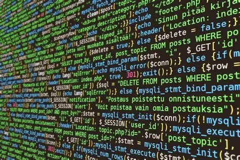

La Programmation
La programmation informatique regroupe toutes les activités liées à la conception, l’écriture, le
test et la maintenance de programmes à l’aide de langages de programmation. Elle constitue une
compétence essentielle
de l’ingénierie moderne et intervient dans la création de logiciels, d’applications et de systèmes
numériques utilisés
dans tous les domaines de la société.Un logiciel est un ensemble de programmes destinés à accomplir des
tâches
précises. La programmation désigne l’écriture du code source, tandis que le développement logiciel
englobe l’ensemble
du processus de création : spécification, conception, implémentation et vérification.Longtemps perçue
comme une
activité purement technique, la programmation est aujourd’hui reconnue comme une pratique culturelle et
sociale
majeure. Elle influence nos usages numériques, nos modes de communication et nos structures économiques.
Des
chercheurs comme Lev Manovich et Shoshana Zuboff ont montré son rôle central dans la culture numérique
et dans les
rapports de pouvoir liés aux technologies.La programmation comporte aussi des enjeux éthiques : les
choix techniques
faits par les programmeurs peuvent amplifier ou réduire les biais algorithmiques, comme l’ont démontré
Joy
Buolamwini et Timnit Gebru dans leurs travaux sur la reconnaissance faciale. Elle soulève également des
questions
d’inclusion et de diversité dans les métiers du numérique, étudiées par Mar Hicks et Janet Abbate.Enfin,
la
programmation s’inscrit dans des dynamiques collectives, à travers les communautés open source, les
plateformes
collaboratives comme GitHub et les initiatives d’apprentissage du code. Pour Gabriella Coleman, ces
pratiques
traduisent une éthique du partage et de la liberté propre aux développeurs.
